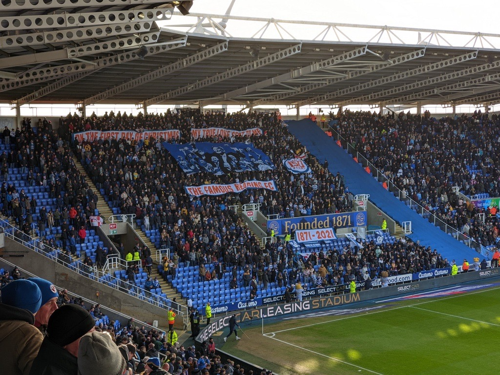
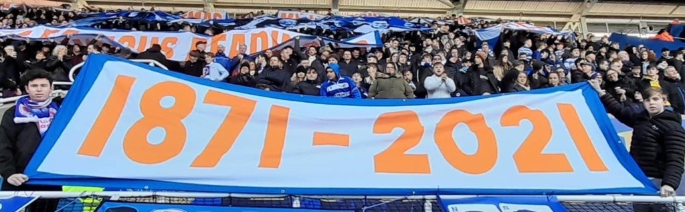
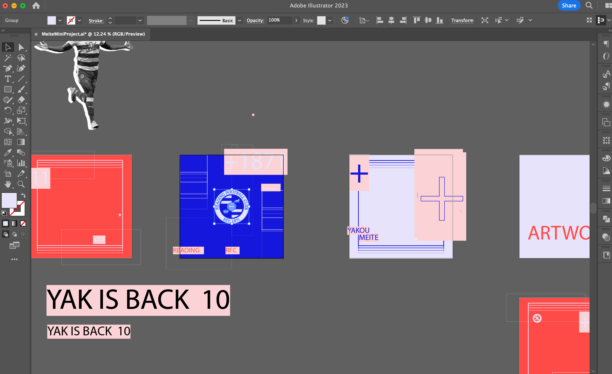
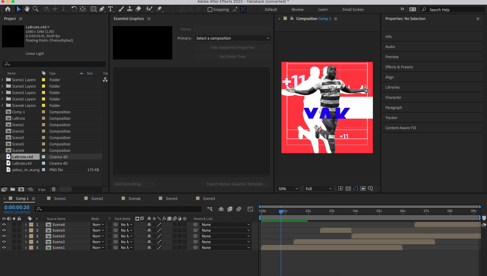

Reading FC: Murals & Player Promotion

Project Outline Statement
Background
Throughout my teens and early twenties I have been involved with the Reading Football Club community. The connections and relationships I built over that time provided me with the opportunity to work with the club on some exciting projects. One of those was to produce a series of murals for a new stand at the Select Car Leasing Stadium. One mural would stretch across a section of the stadium to commemorate one of the clubs previous managers. I was also commissioned to create a series of three murals that would be placed in the tunnel entries into the stand. I was free to design and consider the content of these murals by gathering a collective opinion across my community connections.
I was also handed a second opportunity to create a promotional media piece for a Reading FC player. This piece of media would be distributed across social network sites to promote the return of a player from injury. The design and energy of the video needed to be fast paced and energetic to reflect the player and his particular style.
Date & Duration:
- August - October 2021 (Development & Release)
Project Goals & Challenges
Pain Points
- Producing a design that would be printed at a great scale. At the time this is something I had never done before. Research was needed to understand best practice and appropriate scales to use in order to keep resolution and image quality consistent
- There was significant pressure to make sure the mural design would be something accepted and liked by the Reading FC fanbase. The design would reflect either positively or negative on the club and myself
- Colour choices, the colours chosen by myself needed to be compatible for large CMYK prints. Previously, my primary experience had been in producing digital RGB designs which are generally seen to be much more forgiving in understanding how the final product will look.
Goals
- To produce a design that would be embraced by the Reading FC fanbase
- To execute the mural brief and provide the Select Car Leasing stadium with an exciting visual design that the club can be proud of
- To create an exciting promotional video that improves my design software skills and produces a much more professional final product
Mural Development
Designing for Print
Considerations of colours and sizing
- Point 1
- Point 2
- Point 3
- Point 4

Idea behind the design
producing a design that uplifts the fanbase as the club are in a difficult time
Mural Outcome
The final outcome proved to be very successful. The fanbase were very positive in their interaction with the murals on social media. The football club have also been regularly using the murals as a focal point on social media. In the run up to matchdays the club will promote the fixture through videos and photos of the murals.
Caption for Image

Caption for Image

Caption for Image

Caption for Image

Enter description of the fact I was offered the chance to produce a tifo for one of the fixtures
Enter description of the below
List what I learned from this project
- Point 1
- Point 2
- Point 3
Player Promotion Development
Designing for Animation
Storyboarding
Software Mixing
Include video below of Cinema 4D production and applying this to illustrator
Applying Cinema 4D production to illustrator
Player Promotion Outcome
Enter description of the product and it's outcomes
Enter description here of the final product in detail.
List what I learned from this project
- Point 1
- Point 2
- Point 3
Talk Reading Stickers
Project Outline Statement
Background: This work contributes towards a small business that I run alongside some friends. This business involves, creating, marketing and selling stickers for the Reading Football Club fanbase.
Enter description of the project
Date & Duration:
- Date - Date (Development & Release)
Stickers Development
Describe using Photoshop for Image manipulation

Using Photoshop & Illustrator

Promotion & Outcome
Producing enticing marketing
Describe the Initial Development process using miro boards to decide on initial designs to input within the Design System
Creating marketing videos that hold suspense, create anticipation
Enter image description

The final sticker production
Mention the key enticing features (spotify scanning) that was used to entice people to buy/interact with the stickers

List what I learned from this project
- Point 1
- Point 2
- Point 3